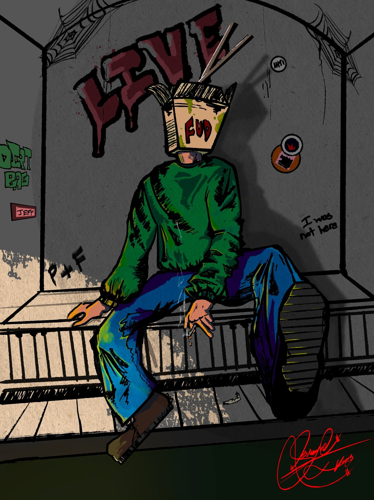
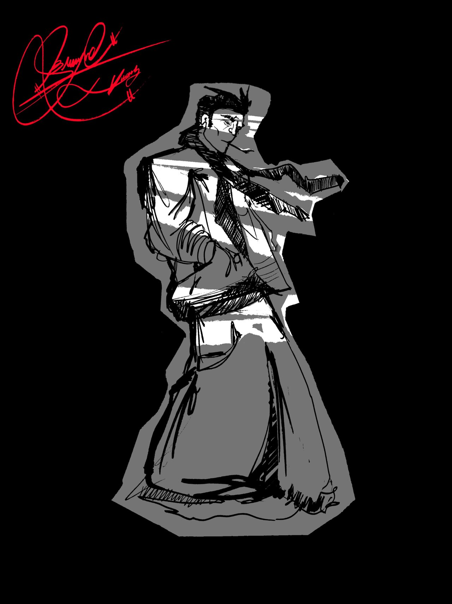
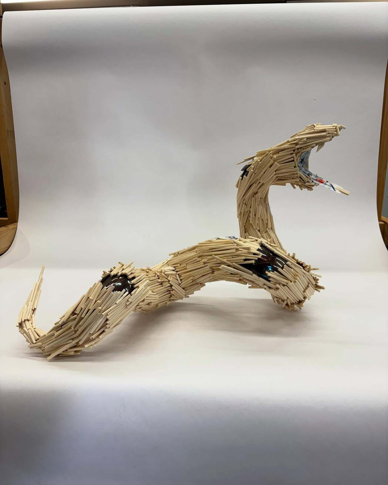
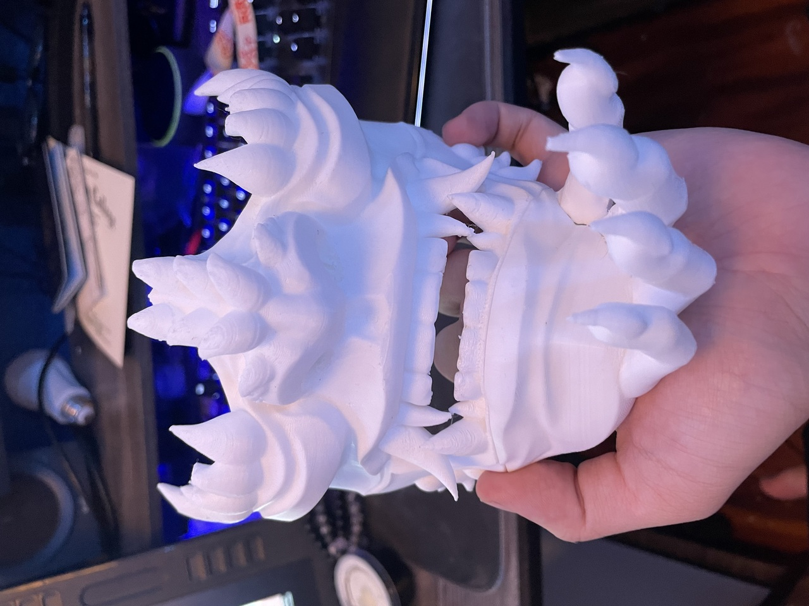
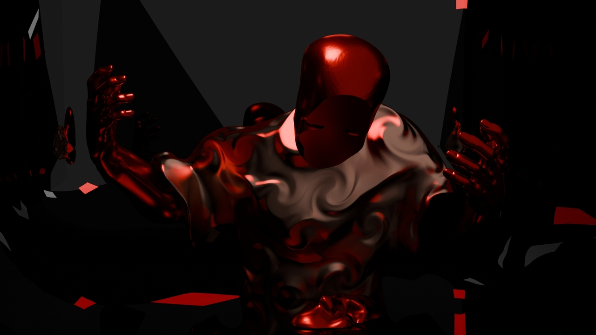

🐼 A little bit about me:
My name is Brandon Vuong—an aspiring digital artist who dabbled in various mediums, because I see no reason to limit myself. Art to me has morphed and changed its relationship with me the more AND less I become familiar with it. I've found that I'm best at digital 3D work. Whether it's CAD programs, creative 3D sculpting, printing and refining, it's a medium that I don't see myself ever putting down.
Born and raised in Silicon Valley—where the rent’s absurd and creativity seems like a rare commodity—I draw inspiration from my heritage and values to drive my practice.
🐼Art isn’t just my passion—it’s my compass.
🐼My Work

"Take Out Thoughts." 8/6/2026.
My idea with this piece was to utilize and experiment with Procreate and learn as much tools and techniques as possible. I was driven to bringing this piece to full completion as I don't do so normally. During this time I was feeling drained by work, social pressures, and school workload...you know...life. It almost felt like I was in perpetual mental comotose ,but I wasn't able to stop my primary functions. Hence, "Take out thoughts."

"Neatly Folded." 8/4/2026.
I remember taking a little mini adventure back when gas wasn't an issue. I'd pick a direction when I was feeling burnt out and drive until I found some place quiet to work on art. I did this one recently on one of my excursions and remembered getting in a flow state. What started, initially, as a study on folded clothes and how that interacted on form became a giant "Fuck it." halfway through. If I was going to fold my clothes, I'll fold them neatly in the way I want to. Which is not at all.

"Inheritance" 3/27/2025
My first larger projects that I'd for my undergrad in sculpture design. I've always enjoyed working in 3D and felt this project resonated with me through material choices and content. The overall structure is made completely of chopsticks and structurally supported using brazed wires. The spoons underneath the patches represents the serpent shedding old traditions for new ones. As I move through life, I notice older traditions slowly fade in favor for adopted ones. I see it with my siblings and how they abandon chopsticks for spoons. Vietnamese for english. Pho for burgers.

"Masked." 12/1/24
This project started my unhealthy obssesion for 3d printing. CAD, Blender, 3D animation. All of it came from my first mask I printed for the first class I took for my undergrad. Intro into Digital Media Art paved an understanding that I could combine my love for working with my hands to the immateriality. The concept of making and sculpting as you would with your hands on a computer and being able to print and hold the object without the need for traditional sculpting materials.

"Where's My Face?" 11/14/26
What this is, is fundamentally the growth of everything I've learned in my undergrad put into one piece. This is a bust using myself as reference to scale that will be printed using a 3D printed sculpture made entirely of PLA and finished to where it looks made of another material. This piece is the definition of my growth as it tackles the struggles of my cultural identity and embodies the feelings of dissasociation from either sides of my cultures. I'm born American with a Vietnamese face. My Vietnamese is too broken to be understood. I'm too americanized despite the asian values I cling to for comfort.
🐼Contact Me
🐼Email: Bvuong2311@gmail.com